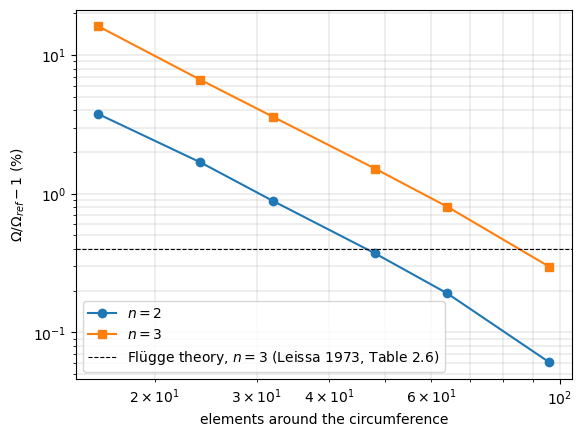
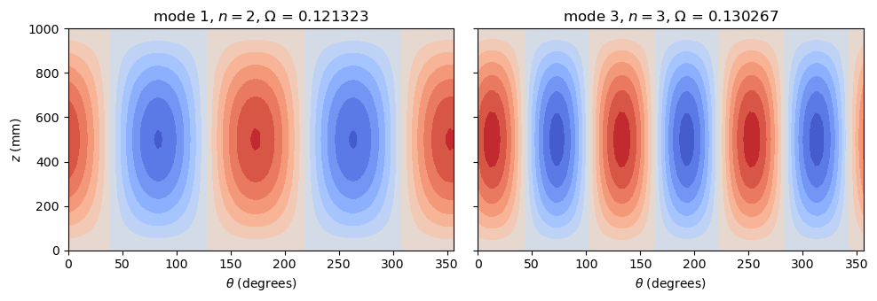

Natural frequency analysis of a cylinder#
An isotropic circular cylindrical shell of Quad4 elements, supported at both ends by shear diaphragms, whose lowest frequencies are compared with the three-dimensional elasticity solution tabulated by Leissa (1973). The mass matrix is assembled with update_M and the frequencies are computed with pyfe3d.solver.natural_frequency, see Linear buckling and natural frequencies. The full references are at the end of the notebook.
[1]:
%matplotlib inline
import numpy as np
import matplotlib.pyplot as plt
from numpy import isclose
from scipy.sparse import coo_matrix
from pyfe3d import DOF, DOUBLE, INT, Quad4, Quad4Data, Quad4Probe
from pyfe3d.shellprop_utils import isotropic_plate
from pyfe3d.solver import natural_frequency
The reference values#
Leissa (1973) writes the frequencies \(\omega\) as the frequency parameter of his Eq. (2.26), p. 38,
and defines the shear diaphragm supports by his Eq. (2.33), p. 43, \(v = w = N_x = M_x = 0\) at both ends. Table 2.8 (Sec. 2.3, p. 55) gives the lowest frequency parameters of the three-dimensional theory of elasticity, shear diaphragms at both ends and \(\nu = 0.3\). For \(R/h = 20\) and \(l/(m R) = 4\):
\(n\) |
\(\Omega\) |
|---|---|
2 |
0.121249 |
3 |
0.129881 |
every other entry of that column being higher (\(n = 1\): 0.257011, \(n = 4\): 0.219098). A cylinder of length \(L = 4 R\) vibrating with \(m = 1\) axial half-wave therefore has the \(n = 2\) pair as its two lowest frequencies and the \(n = 3\) pair as the next two: each circumferential wave number \(n \ge 1\) gives two modes of the same frequency, \(\cos n\theta\) and \(\sin n\theta\). A shell theory differs from the elasticity solution: Table 2.6 (concluded), p. 53, of the same reference puts the Flügge shell theory 0.40 % above it for \(n = 3\) at this geometry.
[2]:
Omega_ref = {2: 0.121249, 3: 0.129881}
The model#
The parameter \(\Omega\) is dimensionless, so only \(R/h\), \(L/R\) and \(\nu\) matter: \(R = 250\) mm, \(h = R/20\), \(L = 4 R\), \(E = 70\) GPa, \(\nu = 0.3\) and \(\rho = 2700\) kg/m\(^3\). The axis of the cylinder is the global \(z\) axis. The mesh has ntheta nearly square elements around the circumference; the last column of nodes is replaced by the first one to close the cylinder. The element \(x\) axis is set along the axis of the
cylinder by the vector \((0, 0,
1)\) given to update_rotation_matrix, and update_M(..., mtype=0) gives the consistent mass matrix.
The shear diaphragms hold the radial and the circumferential displacements at both ends, which for a cylinder along \(z\) are the global \(x\) and \(y\) translations, while the axial displacement and the rotations are free (\(N_x = M_x = 0\)). The rigid axial translation is removed by holding the axial displacement of a single node at mid-length, where the axial displacement of every mode with \(m = 1\) vanishes:
[3]:
R = 0.250 # m
h = R/20 # m
L = 4*R # m
E = 70.e9 # Pa
nu = 0.3
rho = 2.7e3 # kg/m3
prop = isotropic_plate(thickness=h, E=E, nu=nu, rho=rho)
def cylinder(ntheta, num_eigvalues=6):
data = Quad4Data()
probe = Quad4Probe()
nlength = int(round(ntheta*L/(2*np.pi*R)))
nlength += 1 - nlength % 2
nids = 1 + np.arange(nlength*(ntheta + 1))
nids_mesh = nids.reshape(nlength, ntheta + 1)
nids_mesh[:, -1] = nids_mesh[:, 0]
nids = np.unique(nids_mesh)
nid_pos = dict(zip(nids, np.arange(len(nids))))
zlin = np.linspace(0, L, nlength)
thetalin = np.linspace(0, 2*np.pi, ntheta + 1)[:-1][::-1]
zmesh, thetamesh = np.meshgrid(zlin, thetalin)
zmesh = zmesh.T
thetamesh = thetamesh.T
ncoords = np.vstack(((np.cos(thetamesh)*R).flatten(),
(np.sin(thetamesh)*R).flatten(),
zmesh.flatten())).T
ncoords_flatten = ncoords.flatten()
x, y, z = ncoords.T
n1s = nids_mesh[:-1, :-1].flatten()
n2s = nids_mesh[1:, :-1].flatten()
n3s = nids_mesh[1:, 1:].flatten()
n4s = nids_mesh[:-1, 1:].flatten()
num_elements = len(n1s)
N = DOF*nlength*ntheta
KC0r = np.zeros(data.KC0_SPARSE_SIZE*num_elements, dtype=INT)
KC0c = np.zeros(data.KC0_SPARSE_SIZE*num_elements, dtype=INT)
KC0v = np.zeros(data.KC0_SPARSE_SIZE*num_elements, dtype=DOUBLE)
Mr = np.zeros(data.M_SPARSE_SIZE*num_elements, dtype=INT)
Mc = np.zeros(data.M_SPARSE_SIZE*num_elements, dtype=INT)
Mv = np.zeros(data.M_SPARSE_SIZE*num_elements, dtype=DOUBLE)
for k, (n1, n2, n3, n4) in enumerate(zip(n1s, n2s, n3s, n4s)):
quad = Quad4(probe)
quad.n1, quad.n2, quad.n3, quad.n4 = n1, n2, n3, n4
quad.c1 = DOF*nid_pos[n1]
quad.c2 = DOF*nid_pos[n2]
quad.c3 = DOF*nid_pos[n3]
quad.c4 = DOF*nid_pos[n4]
quad.init_k_KC0 = k*data.KC0_SPARSE_SIZE
quad.init_k_M = k*data.M_SPARSE_SIZE
quad.update_rotation_matrix(ncoords_flatten, 0., 0., 1.)
quad.update_probe_xe(ncoords_flatten)
quad.update_KC0(KC0r, KC0c, KC0v, prop)
quad.update_M(Mr, Mc, Mv, prop, mtype=0)
KC0 = coo_matrix((KC0v, (KC0r, KC0c)), shape=(N, N)).tocsc()
M = coo_matrix((Mv, (Mr, Mc)), shape=(N, N)).tocsc()
# shear diaphragms at both ends, one node held axially at mid-length
bk = np.zeros(N, dtype=bool)
edges = isclose(z, 0) | isclose(z, L)
bk[0::DOF][edges] = True
bk[1::DOF][edges] = True
middle = np.where(isclose(z, L/2))[0]
bk[2::DOF][middle[0]] = True
bu = ~bk
omegan, eigvecsu = natural_frequency(KC0[bu, :][:, bu], M[bu, :][:, bu],
num_eigvalues=num_eigvalues, tol=1e-8)
eigvecs = np.zeros((N, num_eigvalues))
eigvecs[bu] = eigvecsu
Omega = omegan*R*np.sqrt(rho*(1 - nu**2)/E)
return dict(Omega=Omega, eigvecs=eigvecs, ncoords=ncoords,
thetamesh=thetamesh, zmesh=zmesh, num_elements=num_elements)
Convergence#
natural_frequency returns the circular frequencies sorted; the first two are the \(n = 2\) pair and the next two the \(n = 3\) pair. The frequencies converge from above:
[4]:
print('%6s %8s %11s %11s %11s %11s %11s %11s' % ('ntheta', 'elements',
'Omega_1', 'Omega_2', 'n=2 diff.', 'Omega_3', 'Omega_4', 'n=3 diff.'))
conv = []
for ntheta in [16, 24, 32, 48, 64, 96]:
res = cylinder(ntheta)
O = res['Omega']
d2 = O[0]/Omega_ref[2] - 1
d3 = O[2]/Omega_ref[3] - 1
conv.append((ntheta, d2, d3))
print('%6d %8d %11.8f %11.8f %10.2f%% %11.8f %11.8f %9.2f%%'
% (ntheta, res['num_elements'], O[0], O[1], 100*d2, O[2], O[3],
100*d3))
ntheta elements Omega_1 Omega_2 n=2 diff. Omega_3 Omega_4 n=3 diff.
16 160 0.12580294 0.12580294 3.76% 0.15085258 0.15085258 16.15%
24 336 0.12329016 0.12329016 1.68% 0.13850345 0.13850345 6.64%
32 640 0.12232531 0.12232531 0.89% 0.13454988 0.13454988 3.59%
48 1440 0.12169936 0.12169936 0.37% 0.13185390 0.13185390 1.52%
64 2560 0.12148037 0.12148037 0.19% 0.13092776 0.13092776 0.81%
96 5760 0.12132261 0.12132261 0.06% 0.13026712 0.13026712 0.30%
[5]:
conv = np.array(conv)
plt.loglog(conv[:, 0], 100*conv[:, 1], 'o-', label='$n = 2$')
plt.loglog(conv[:, 0], 100*conv[:, 2], 's-', label='$n = 3$')
plt.axhline(0.40, color='k', ls='--', lw=0.8,
label='Flügge theory, $n = 3$ (Leissa 1973, Table 2.6)')
plt.xlabel('elements around the circumference')
plt.ylabel(r'$\Omega/\Omega_{ref} - 1$ (%)')
plt.legend()
plt.grid(True, which='both', lw=0.3)
plt.show()

With 96 elements around the circumference the \(n = 3\) pair is already closer to the three-dimensional solution than the Flügge shell theory is.
Vibration modes#
The radial displacement \(u_r = (x u_x + y u_y)/R\) of the first and of the third modes of the finest mesh, on the unrolled surface: two and three full waves around the circumference, one half-wave along the length:
[6]:
x, y, _ = res['ncoords'].T
fig, axs = plt.subplots(1, 2, figsize=(10, 3.5), sharey=True)
for ax, mode, n in zip(axs, [0, 2], [2, 3]):
vec = res['eigvecs'][:, mode]
ur = (x*vec[0::DOF] + y*vec[1::DOF])/R
ur = ur.reshape(res['zmesh'].shape)
ax.contourf(np.degrees(res['thetamesh']), res['zmesh']*1e3, ur,
levels=12, cmap='coolwarm')
ax.set_title(r'mode %d, $n = %d$, $\Omega$ = %.6f'
% (mode + 1, n, res['Omega'][mode]))
ax.set_xlabel(r'$\theta$ (degrees)')
axs[0].set_ylabel('$z$ (mm)')
plt.tight_layout()
plt.show()

References#
Leissa, A. W., Vibration of Shells, NASA SP-288, 1973.